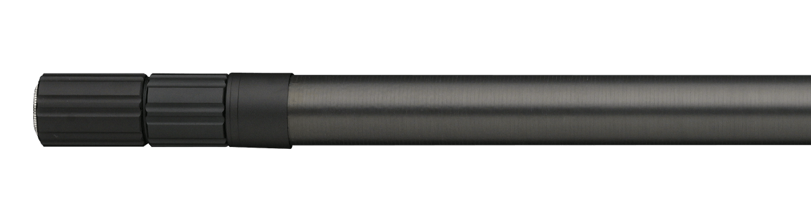
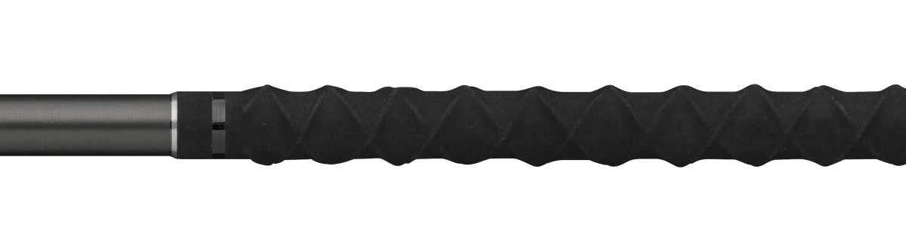
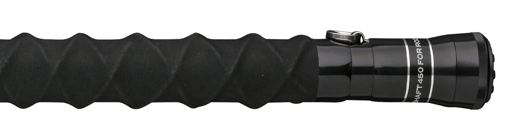

ザ・グランドシャフト450
（THE GRAND SHAFT 450）
ザ・グランドシャフト450（THE GRAND SHAFT 450）はAPIA（アピア）のランディングシャフト（タモの柄）です。
ビッグゲーマーが求める圧倒的な高強度・高剛性を実現したモデルで、濡れた手でも滑りにくく力を入れやすいグリップ、外傷からブランクを守るシールドテック、フライングギャフ使用時にロープを固定できるリングを装備。磯や堤防で大型魚を取り込むための1本です。

画像出典:APIA公式HP
スペック
- メーカー
- APIA（アピア）
- タイプ
- ランディングシャフト
- 全長
- 4.50m（3.1m／4.5mの2段階で使用可能）
- 継数
- 3本
- 仕舞寸法
- 162.5cm
- 自重
- 804g
- 先径／元径
- 19.3mm／27.5mm
- カーボン含有率
- 95.0%
- ネジ規格
- JIS W1/2
- 価格
- 57,200円（税込）
▼今すぐチェック
ザ・グランドシャフト450の特徴
大物とのやり取りの最後の一瞬を任せられる、高強度・高剛性のランディングシャフト
-
圧倒的な高強度・高剛性
ビッグゲーマーが求める高い強度と剛性を実現。3.1mと4.5mの2段階で使え、足場の高さに合わせて長さを選べる。
-
滑りにくいグリップとシールドテック
濡れた手でも滑りにくく力を入れやすいグリップ形状。全節に、薄く擦れに強い特殊テープ「シールドテック」を巻き、外傷からブランクを守る。
-
ギャフにも対応する装備
フライングギャフ使用時にロープを固定できる尻手リングを増設（直径10mmまでのロープに対応）。取込み用具の取付部はボトル止め加工でギャフやネットの脱落を防ぎ、固着を防止する内部機構も備える。
ザ・グランドシャフト450の使い方
取付部にランディングネットやギャフを取り付けて使います。ネジ穴はJIS W1/2規格なので、それ以外の規格のギャフやネットは取り付けられない点に注意しましょう。
足場が低い場所では3.1m、高い場所では4.5mと、2段階で長さを使い分けます。フライングギャフを使うときは、尻手リングにロープを固定しておくと安心です。
ザ・グランドシャフト450のがおすすめの人
磯や堤防で、ブリ・ヒラマサなどの青物や大型魚を狙う人に向いたランディングシャフトです。
強度と剛性を最優先したい人、ギャフとネットを状況で使い分けたい人にオススメ。軽さを重視するなら、同じアピアの「THE SHAFT」シリーズも選択肢になります。
ワンポイント
高強度・高剛性と引き換えに、自重は804gとしっかりした重さがあります。長時間持ち歩く釣りでは、ホルダーなどで体への負担を減らす工夫をすると快適です。
使用後は真水で洗って塩分を落とし、よく乾かしてから収納すると固着や劣化を防げます。
アピアのランディングシャフトの使い分け
| モデル | 全長／自重 | 特徴 |
|---|---|---|
| THE GRAND SHAFT 450 | 4.5m／804g | 3本継・カーボン95%。大型魚向けの高強度・高剛性（本記事のモデル） |
| THE SHAFT 450 | 4.5m／367g | 8本継・仕舞65.5cm・T1100G搭載。軽量で港湾〜堤防に |
| THE SHAFT 550 | 5.5m／481g | 10本継・仕舞65cm。足場の高い堤防に |
大型魚の取り込みや強度を最優先するならTHE GRAND SHAFT 450、軽さと携帯性を重視するならTHE SHAFTと、狙う魚と釣り場で選び分けましょう。
ディテール
ザ・グランドシャフト450のディテールを紹介します。

取込み用具取付部ボトル止め加工で、ギャフやネットなどのランディングツールの脱落を防止。

グリップ濡れた手でも滑りにくく、力を入れやすいグリップ形状。

尻手リングフライングギャフのロープを固定できるリング（直径10mmまで）。
画像出典:APIA公式HP
ザ・グランドシャフト450とあわせてチェックしたいアイテム
-
 ガネット Ver.2
アピア
詳細はこちら＞
ガネット Ver.2
アピア
詳細はこちら＞
アピアのフローティングベスト。背面の大型Dリングなど、ランディングツールと組み合わせやすい装備。
-
 フージンZ 6th
アピア
詳細はこちら＞
フージンZ 6th
アピア
詳細はこちら＞
アピアのフラッグシップシーバスロッド。ランカー狙いのタックルとあわせて。
-
 グランデージ
アピア
詳細はこちら＞
グランデージ
アピア
詳細はこちら＞
磯のヒラスズキ用ATLASなど、釣りごとに特化したアピアのロッドシリーズ。